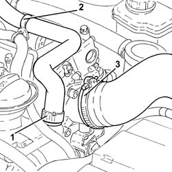
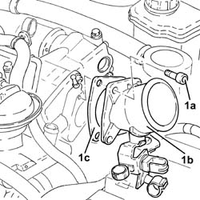
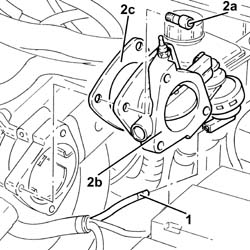
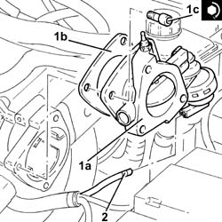
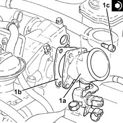

1060G50 PNEUMATICALLY CONTROLLED THROTTLE BODY R R
- Path
- Procedures > 10 ENGINE UNIT > 1060 DIESEL INJECTION SYSTEM > 1060G PRESSURE PUMP ELECTRIC CONTROL > 1060G50 PNEUMATICALLY CONTROLLED THROTTLE BODY R R
- Kind
- repair procedure (removal / refitting; the operation number is the code)
- Applies to
- engines: 1.9 JTD 16V; all production periods
- Interactive page
- https://sloeber94.github.io/elrnDB-aGt/en/#/125001056
Applies to: engines: 1.9 JTD 16V; all production periods
 Removing
Removing
 Refitting
RefittingProceed with removal
- 1016A10 sound-proofing cover - r + r
1. Loosen the band and disconnect the engine oil vapour recovery pipe from the engine oil filler.
2. Release the engine oil vapour recovery pipe from the fastening band and move it aside.
3. Loosen the band and disconnect the air intake hose from the connector on the throttle casing.

Applies to: engines: 1.9 JTD 16V; all production periods
1. Undo the bolts (1a) and remove the connector on the throttle body (1b) complete with gasket (1c).

Applies to: engines: 1.9 JTD 16V; all production periods
1. Disconnect the vacuum pipe from the pneumatic valve on the throttle body.
2. Undo the bolts (2a) and remove the electropneumatically controlled throttle body (2b) complete with gasket (2c).

Applies to: engines: 1.9 JTD 16V; all production periods
Refitting
Removing1. Replace the pneumatically-controlled throttle body (1a), complete with gasket (1b), back in its housing and secure by tightening bolts (1c) to the recommended torque.
 | Fastening | Component | Ø | Value (daNm) |
|---|---|---|---|---|
1c | - | - | - | - |
2. Connect the vacuum pipe to the pneumatic valve on the throttle body.

Applies to: engines: 1.9 JTD 16V; all production periods
1. Replace the connector on the throttle body (1a), complete with gasket (1b), back in its housing and secure by tightening bolts (1c) to the recommended torque.
| Fastening | Component | Ø | Value (daNm) |
|---|---|---|---|---|
1c | - | - | - | - |

Applies to: engines: 1.9 JTD 16V; all production periods
Connect the air inlet hose to the connector on the throttle casing and tighten the band.
Place the engine idle oil vapour recovery pipe in its seat and secure it using the band.
Connect the oil vapour recovery pipe to the engine oil filler and tighten the band.
Proceed with refitting
- 1016A10 sound-proofing cover - r + r
.